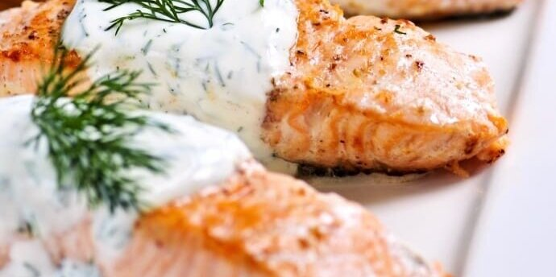

Norwegian Salmon with Dill Sauce

Description
Though the days of catching fish with our bare hands are nearly a thing of the past, our desire for the fatty Salmon has not diminished one bit.
Whatever battefield you might be returning from, protein is your key to recovery.
We will pair our succulent fish with a savory dill sauce, but be warned; Thor is known to devour heaps of the stuff.
So be sure to prepare plenty!
Ingredients
- 4 Norwegian salmon fillet
- 160g plain yogurt
- 1 garlic clove
- 2 tbsp lemon juice
- 1 handful of dill, fresh
- black pepper
- sea salt
Steps
- Pour some mead to share with Odin
- Preheat oven to 220°C (425°F)
- Lightly oil a roasting dish or line a heavy baking sheet with foil
- Add the salmon and season with lemon juice, pepper, and sea salt
- Roast until cooked through in the middle
- Meanwhile, whisk together the yogurt, lemon juice, dill, and garlic
- Drizzle over the salmon and garnish with remaining dill sprigs
- Feast!